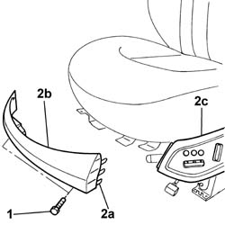
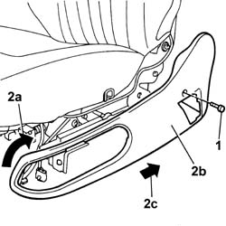
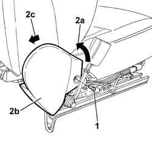
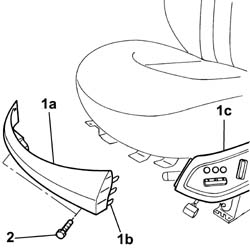
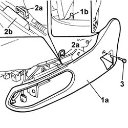
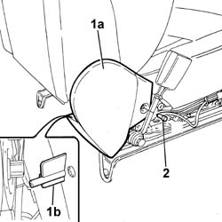

7045A42 Front seat GUARD (one), left or right - R.R.
- Path
- Procedures > 70 FITTINGS > 7045 FRONT SEATS > 7045A FRONT SEAT ASSEMBLY > 7045A42 Front seat GUARD (one), left or right - R.R.
- Kind
- repair procedure (removal / refitting; the operation number is the code)
- Applies to
- all engines; all production periods
- Interactive page
- https://sloeber94.github.io/elrnDB-lThss/en/#/80557
Applies to: all engines; all production periods
 Removing
Removing
 Refitting
Refitting- Disconnect the negative battery terminal.
See in Op. 7045A10 FRONT SEAT (one) left or right - R.R.
- Carry out the operations described below to remove the centre guard.
1. Undo the fixing bolts.
2. Acting on the retaining springs (2a), remove the centre guard (2b) separating it from the left side guard (2c).

Applies to: all engines; all production periods
- Carry out the operations described below to remove the left side guard.
- Disconnect the negative battery terminal.
See in Op. 7045A10 FRONT SEAT (one) left or right - R.R.
- Remove the centre guard carrying out the operations described above.
See in Op. 7045J10 switch unit for movement of one front seat, l/h or r/h - r+r for check
1. Undo the fixing bolt.
2. Turn the side guard (2b) slightly in a clockwise direction (2a) and remove it extracting it in the direction shown by the arrow (2c).

Applies to: all engines; all production periods
- Carry out the operations described below to remove the right side guard.
- Disconnect the negative battery terminal.
See in Op. 7045A10 FRONT SEAT (one) left or right - R.R.
1. Undo the fixing bolt.
2. Turn the side guard (2b) slightly in an anti-clockwise direction (2a) and remove it extracting it in the direction shown by the arrow (2c).

Applies to: all engines; all production periods
Refitting
Removing- Carry out the operations described below to remove the centre guard.
1. Fit the guard (1a), fitting the retaining springs (1b) in the housings in the left side shield (1c).
2. Tighten the fixing bolts.

Applies to: all engines; all production periods
See in Op. 7045A10 FRONT SEAT (one) left or right - R.R.
- Connect the negative battery terminal.
- Carry out the operations described below to fit the left side guard.
1. Position the side guard (1a), checking that the rear centering tooth (1b) is inserted in the housing.
2. Fit the hook (2a) in the housing (2b) in the guard.
3. Tighten the fixing bolts.

Applies to: all engines; all production periods
See in Op. 7045J10 switch unit for movement of one front seat, l/h or r/h - r+r for check
- Fit the centre guard carrying out the operations described above.
See in Op. 7045A10 FRONT SEAT (one) left or right - R.R.
- Connect the negative battery terminal.
- Carry out the operations described below to fit the right side guard.
1. Fit the guard (1a), inserting the centering pin (1b) in the housing.
2. Tighten the fixing bolt.

Applies to: all engines; all production periods
See in Op. 7045A10 FRONT SEAT (one) left or right - R.R.
- Connect the negative battery terminal.
Topics linked from this page (2)
- 7045A10 FRONT SEAT (one) left or right - R.R.
- 7045J10 switch unit for movement of one front seat, l/h or r/h - r+r for check
Topics that link to this page (26)
- 5580C44 SIDE BAG MODULE (one), left or right - R.R.
- 7045A23 Front seat support/guides, left or right - R.R.
- 7045A38 DEVICE for LUMBAR ADJUSTMENT of driver's seat backrest - R.R. with seat removed
- 7045A39 Device for driver's seat backrest lumbar adjustment - R.R.
- 7045A78 Front seat BACKREST FRAME. (one), left or right - R.R.
- 7045A98 Front seat rear pouch panel, left or right - R.R.
- 7045B08 Front seat head restraint pins - R.R.
- 7045D20 Front seat cushion cover, left or right - R.R.
- 7045D21 Left or right front seat cushion cover - R.R. with seat removed
- 7045D30 Front seat backrest cover - R.R.
- 7045D31 SQUAB TRIM OF ONE FRONT SEAT LH OR RH RR WITH SEAT REMOVED
- 7045J32 Front or rear motor (one) for raising left or right front seat - R.R. after electric circuit check
- 7045J34 Front seat backrest ANGLE adjustment MOTOR, left or right - R.R. after electric circuit check
- 7045J42 Front seat head restraint adjustment motor, left or right - R.R. after electric circuit check
- 7045J50 DRIVER'S SIDE FRONT SEAT POSITION MEMORISATION SYSTEM ECU - R+R FOLLOWING ELECTRICAL WIRING CHECK
- 7045J64 Cable between motor and seat head restraint adjustment device (one), left or right - R.R.
- 7045J65 Cable between motor and seat head restraint adjustment device (one), left or right - R.R. with seat removed
- 7045J66 Front seat head restraint lifting device (one), left or right - R.R.
- 7045J67 Front seat head restraint lifting device (one), left or right - R.R. with seat removed
- 7045J80 FRONT SEAT MOVEMENT SYSTEM WIRING BUNDLE - R R OR REPLACE
- 7045M22 Front seat CUSHION HEATER PAD, left or right - R.R. after electric circuit check
- 7045M26 L/H OR R/H FRONT SEAT SQUAB HEAT PAD - R+R FOLLOWING ELECTRICAL WIRING CHECK
- 7045N10 ELECTRO-PNEUMATIC CONTROL UNIT (1) FOR FRONT SEAT, LEFT OR RIGHT - R.R. WITH SEAT REMOVED
- 7045N11 FRONT SEAT CUSHION MASSAGE/LUMBAR ADJUSTMENT POCKET (1), LEFT OR RIGHT - R.R. WITH SEAT REMOVED
- 7045N15 FRONT SEAT BACK MASSAGE/LUMBAR ADJUSTMENT DEVICE PUMP (1), LEFT OR RIGHT - R.R. WITH SEAT REMOVED
- 7045N16 FRONT SEAT BACK MASSAGE/LUMBAR ADJUSTMENT POCKET (1), LEFT OR RIGHT - R.R. WITH SEAT REMOVED